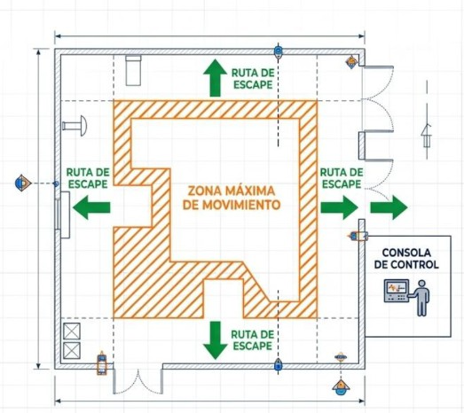
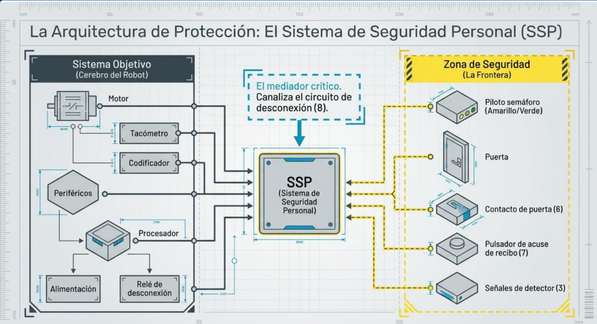
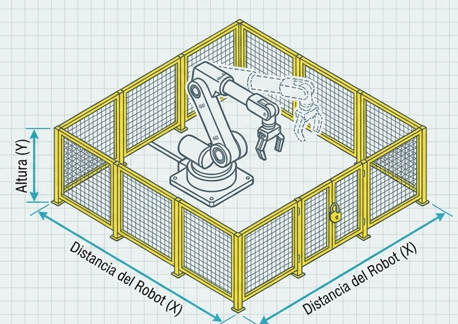
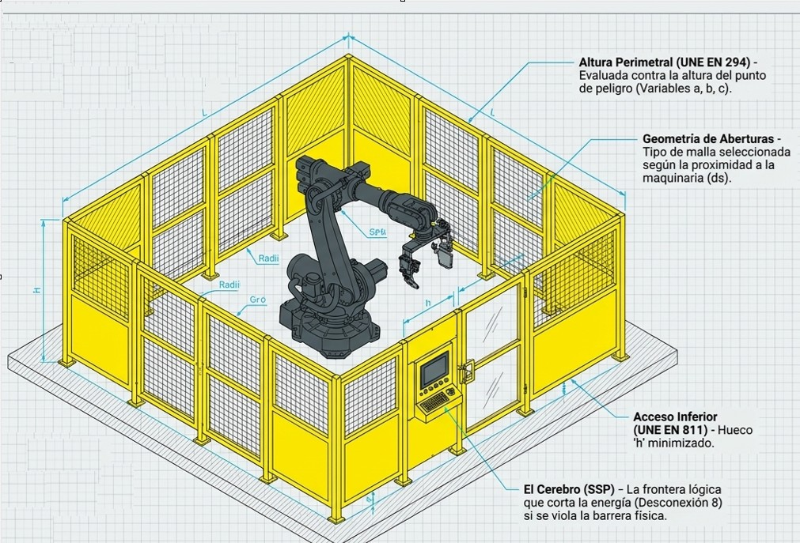

PREVENCIÓN Y SEGURIDAD EN LA AUTOMATIZACIÓN INDUSTRIAL
De los orígenes de la robótica a la normativa moderna de prevención de riesgos.


Método para reducir el consumo de vapor y combustible en las máquinas de fuego.
Idea clave: un condensador separado del cilindro, que se mantiene siempre caliente.
Inicio de la mecanización.
El PDF completo del documento está en la diapositiva de la máquina de vapor.

Mejora con condensador separado y regulador centrífugo.
El regulador es un precedente del control con realimentación.
Documento oficial: patente A.D. 1769, nº 913 (PDF).

Implementada por Henry Ford para la fabricación de automóviles.
Establece el flujo continuo de producción.

Desarrollo de la fresadora de control numérico sobre un modelo Cincinnati Hydro-Tel de 3 ejes verticales.
Sistema de programación automática APT (Automatically Programmed Tools).
Acuerdo de licencia entre Kawasaki Heavy Industries y Unimation.
Inicio de la producción masiva del robot industrial Kawasaki-Unimate 2000 en Japón.

Dick Morley y el equipo de Bedford Associates conciben en 1968 el Modicon 084.
Primer PLC de la historia, diseñado para sustituir los bancos de relés cableados en General Motors. 256 E/S y 32 Kb de memoria.

Primer robot industrial eléctrico de seis ejes, presentado en Alemania.

Presentación del robot eléctrico IRB 6 (Suecia).
En SEAT Zona Franca (Barcelona) se incorporan los primeros robots de Cataluña: tres unidades con tecnología FIAT.
La normativa de seguridad en automatización industrial busca disminuir los riesgos y la gravedad de los accidentes, estableciendo requisitos comunes para el diseño, uso y mantenimiento de robots y sistemas automatizados.
Norma pionera de ámbito internacional. Define e identifica los riesgos fundamentales asociados a los robots y establece el análisis de seguridad correspondiente. Sus indicaciones son de carácter general.
Publicada originalmente en 1986 y revisada en 1992. Destaca por incluir estudios empíricos sobre la probabilidad y gravedad de los accidentes, vinculándolos directamente a la experiencia y formación del operador.
El Comité Europeo de Normalización (CEN) aprobó en 1992 la adaptación europea de la ISO 10218. Inmediatamente, AENOR adoptó este estándar para España bajo la denominación UNE-EN 775.
Datos del Instituto de Seguridad del Trabajador de Tokio revelan una estadística vital:
(El humano entra en el dominio de la máquina).
(El humano está fuera del perímetro activo).
La seguridad no es una barrera aislada: es una filosofía de diseño. Fabricante e integrador se reparte responsabilidades bajo el marco UNE-EN 775; la protección real nace al alinear robot, célula y operario.
Si falla el software, actúa el hardware. Si el humano comete un error, el perímetro lo protege. La seguridad es la alineación de todas las capas.
Primera capa del ciclo de protección: el propio robot vigila su comportamiento, se autocomprueba antes de arrancar y restringe quién puede modificar el control.
Vigila en tiempo real bucles de realimentación, accionamientos y el sistema de control. Si detecta una anomalía (señal perdida, eje descontrolado, watchdog sin respuesta), interrumpe el ciclo antes de que el fallo se propague al brazo o a la célula.
Antes del primer movimiento se verifican tensiones, LEDs, sensores y mensajes de error. Si el autodiagnóstico no confirma un estado sano, el arranque queda bloqueado: no se inicia ningún ciclo automático con fallos pendientes.
Solo personal autorizado puede abrir la unidad de control, arrancar en automático o modificar programas. Llaves físicas, códigos o niveles de permiso evitan cambios accidentales o no autorizados que alteren el comportamiento del robot.
En la práctica, esta capa se completa con límites de velocidad (p. ej. < 0,3 m/s en modos de enseñanza) y detección de colisión: si falla el software, el hardware debe actuar.
Segunda capa: aislar el riesgo con barreras físicas, zonas de interacción controladas y un ecosistema de sensores del fabricante.
Tercera capa: procedimientos, señalización y disciplina operativa. La señalización no sustituye la prevención; la formación continua es obligatoria.
Prohibido entrar en la zona de trabajo con el robot en automático, también en pruebas o puesta a punto: el movimiento puede reanudarse sin aviso.
Uno programa a velocidad lenta; el otro vigila desde fuera con el dedo en el paro de emergencia, listo para cortar si hay un movimiento inesperado.
Validar el programa por etapas: 1º movimiento paso a paso lento → 2º continuo lento → 3º solo entonces subir hasta la velocidad de producción.
Tras una parada, las sirenas audibles avisan antes de reiniciar el ciclo: nadie debe estar dentro ni cerca de la zona peligrosa.
| Color | Descripción |
|---|---|
| Rojo | Emergencia o peligro: exige acción inmediata (p. ej. paro). |
| Amarillo | Condición anormal: hay que vigilar o intervenir pronto. |
| Azul | El operario debe realizar una acción obligatoria. |
| Verde | Condición normal: la máquina puede operar con seguridad. |
| Blanco | Estado neutro u otras condiciones (monitorización, etc.). |
Probar la maleta (paro y habilitación) antes de entrar en el área.
Llevarla siempre en la mano si el robot está encendido: no dejarla aparcada.
Nunca detener el robot con el cuerpo: usar el dispositivo de seguridad, no el contacto físico.
No asumir que el programa ha terminado solo porque el brazo está quieto: puede reanudarse.
El entorno de la célula debe diseñarse para que el riesgo residual sea controlable: zonas marcadas, suelo despejado, rutas de escape y aislamiento remoto del robot.

Identificación clara de la zona máxima de movimiento con marcas en el suelo y señales. Controles ubicados estrictamente fuera de esta zona.
Espacio suficiente para guiar el robot con seguridad y evitar atrapamientos. Suelo libre de aceite, agua o residuos.
Conocer y mantener siempre despejado el camino de salida de la célula ante movimientos anómalos.
Aislar al robot de señales de control remoto que puedan provocar un movimiento inesperado mientras hay personal a su alcance.
Los robots modernos operan a alta velocidad en instalaciones complejas: la integración multiplica los riesgos y exige medidas técnicas de seguridad, no solo prevención basada en el comportamiento.
| Apartado | Enfoque | Qué cubre |
|---|---|---|
| 6.1 | Peligros inherentes | Solapamiento, energía, programación, EMC y factor humano; el dato >50% fallos técnicos. |
| 6.2 | Principios y SSP | Estados automático / intervención manual y arquitectura del Sistema de Seguridad Personal. |
| 6.3 | Cerramiento y normativa | Resguardos (altura + distancia) y marco UNE EN 292, 294, 811 y 953. |
| 6.4 | Microdiseño de distancias | Alcance hacia arriba, ecuación frontal, biomecánica, aberturas y acceso inferior. |
| 6.5 | Célula unificada | Síntesis: perímetro, malla, hueco inferior y cerebro SSP en una sola célula. |
La prevención basada en el comportamiento es insuficiente: los peligros por fallos del sistema exigen medidas técnicas de seguridad.
Cinco familias de peligro caracterizan la automatización moderna. Más de la mitad de los accidentes se atribuyen a fallos técnicos de circuitos y control.
Cuando varios robots o ejes comparten zona de trabajo, sus radios se cruzan a alta velocidad y el riesgo de atrapamiento o choque aumenta.
El proceso puede proyectar partículas, virutas, chorros de agua a presión o haces láser fuera de la zona prevista y alcanzar al operario.
Al poder reprogramarse con libertad, el robot puede cambiar de trayectoria, sentido o velocidad sin aviso previo para quien está cerca.
Interferencias electromagnéticas (EMC), ruido eléctrico o fallos de red pueden alterar señales de control y provocar movimientos no deseados.
Errores al operar, mantener o usar el pendant: accesos indebidos, modos incorrectos o mala interpretación del estado de la célula.
Más de la mitad de los accidentes se atribuyen a circuitos y sistemas de control; el error humano puro queda por debajo del 20%.
Dos estados absolutos rigen la célula; el Sistema de Seguridad Personal (SSP) media entre el cerebro del robot y la frontera física.
Regla absoluta: ausencia total de personas en el espacio controlado. Perímetro cerrado y enclavado.
Regla absoluta: eliminación o reducción máxima del peligro mediante paradas forzosas (parada segura / power off).

El objetivo principal es proteger al trabajador frente a disfunciones del sistema de control mediante guardas.

Diseño general y conceptos básicos de seguridad de máquinas.
Impedir el alcance de miembros superiores hacia la zona peligrosa.
Impedir el alcance de miembros inferiores bajo resguardos.
Diseño y construcción de resguardos fijos y móviles.
El dimensionado de resguardos se basa en tablas normativas: si un valor cae entre dos tabulados, se elige siempre el de mayor seguridad (prohibido interpolar).
Riesgo bajo: lesiones leves/reversibles
La zona peligrosa se considera protegida por distanciamiento si está por encima de 2,5 m.
Riesgo alto: lesiones graves/irreversibles
La zona peligrosa exige un alejamiento mayor situándose por encima de 2,7 m.
Distancia de seguridad para aberturas de hasta 120 mm
Las formas geométricas restringen el movimiento de manera diferente. Para aberturas irregulares, se debe inscribir la forma circular o cuadrada más pequeña posible dentro de la irregularidad.
La altura del hueco inferior «h» determina hasta dónde puede deslizarse el miembro inferior hacia la zona de peligro.
Un diseño técnico riguroso convierte el peligro inherente en seguridad matemática: perímetro, malla, hueco inferior y lógica SSP trabajan juntos.
